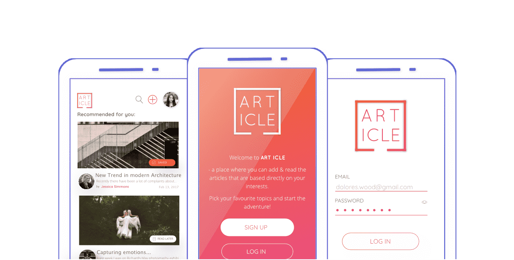
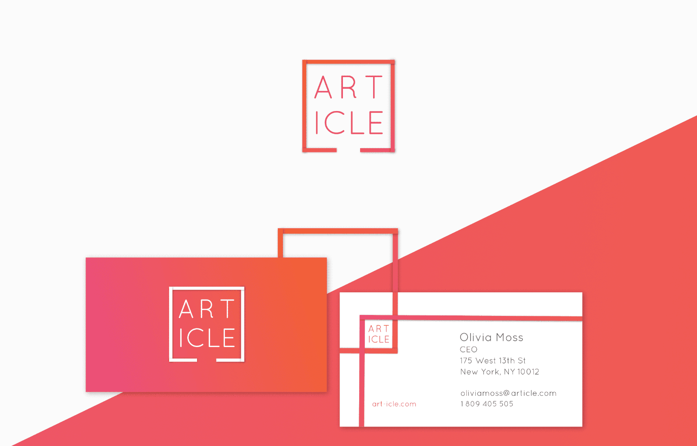
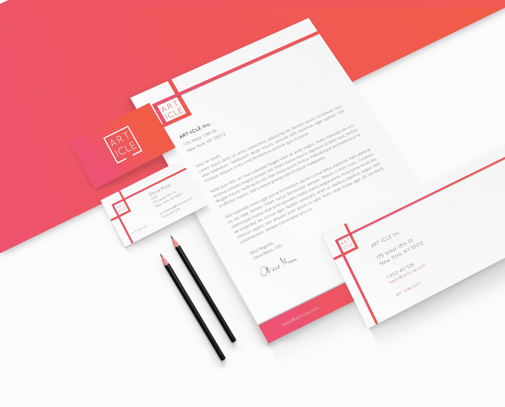
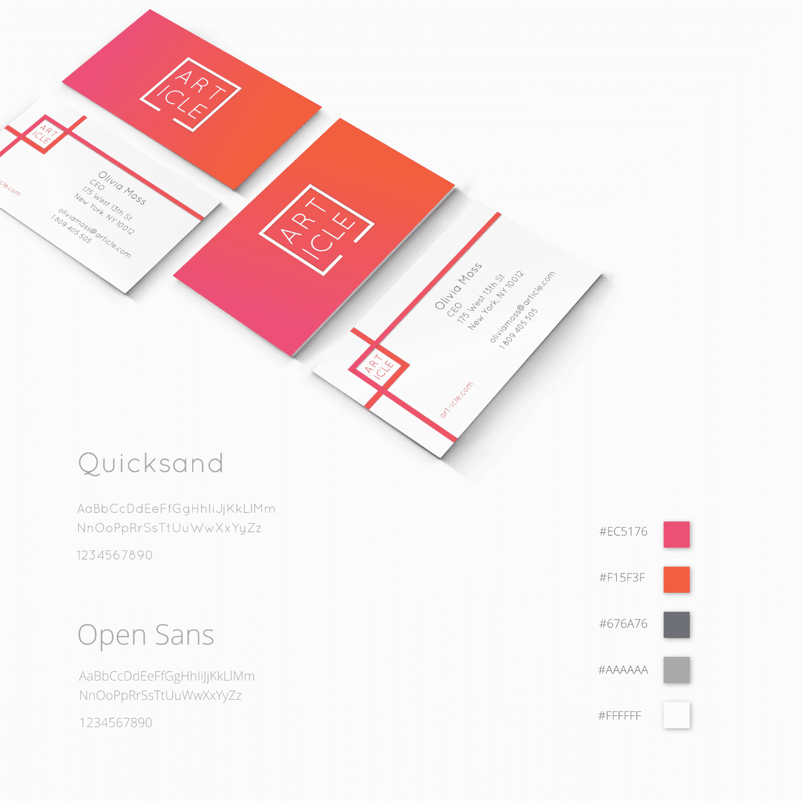
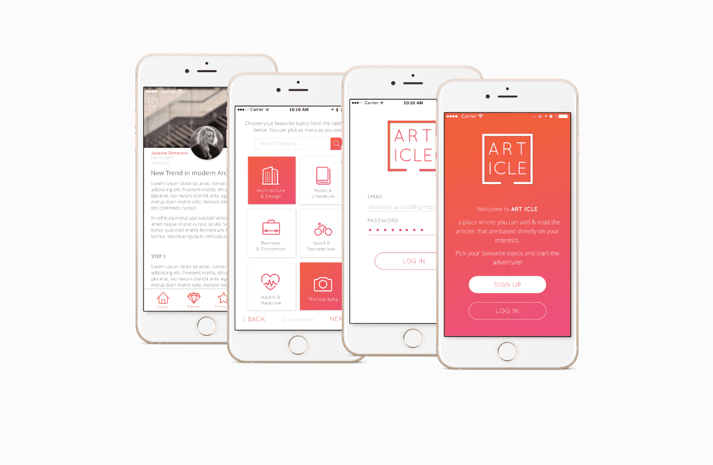
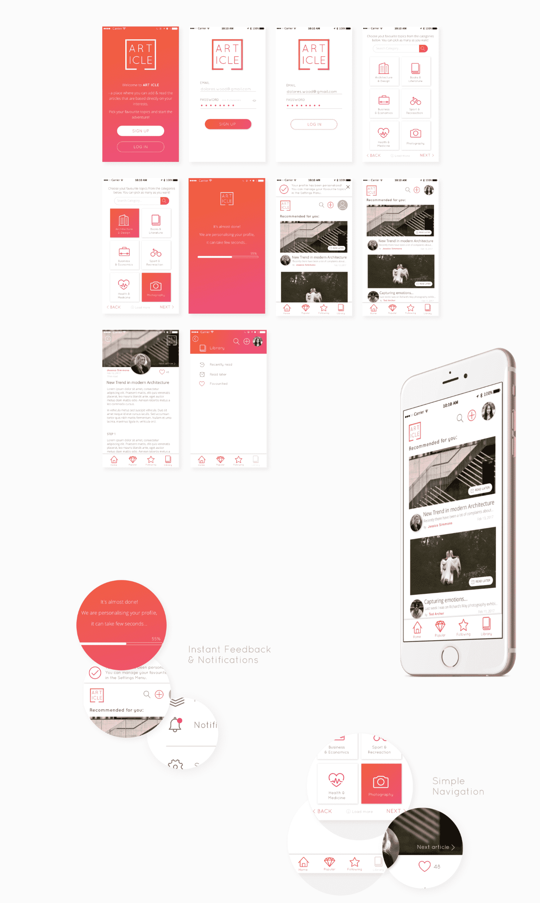
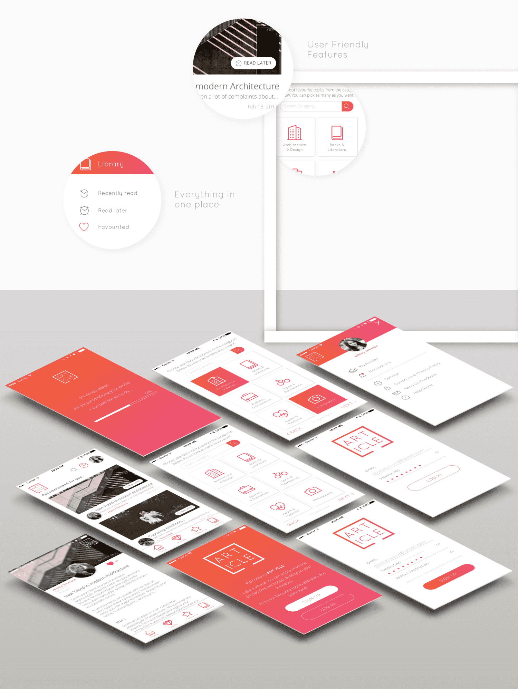

[ART/ICLE]
Branding & App UI Design

Challenges
The idea behind the [ART/ICLE] app is that you have an opportunity to add & read articles based exactly on your interests. All you need to do is to choose your favorite topics and you can read whenever and wherever you like (while traveling by bus to the work or waiting in a queue to the doctor).

Solutions
- You can save favorite articles or when you see something interesting but you don't have the time to read it at this moment - you can click the 'Read later' button and read at the most convenient time.
- The impact is put on simple and not distracting navigation as well as the intuitive and friendly interface. You have your own Library where everything is gathered in one place.
- The identity uses two main bright colors, white for contrast and cold grays for typography. The eye-catching accent here is the shadow on the elements that makes the impression of layered elements. The design is minimalist and clean to help maintain the focus on the content that people share. /personal Project
Tools used
Affity Designer / Affinity Photo





